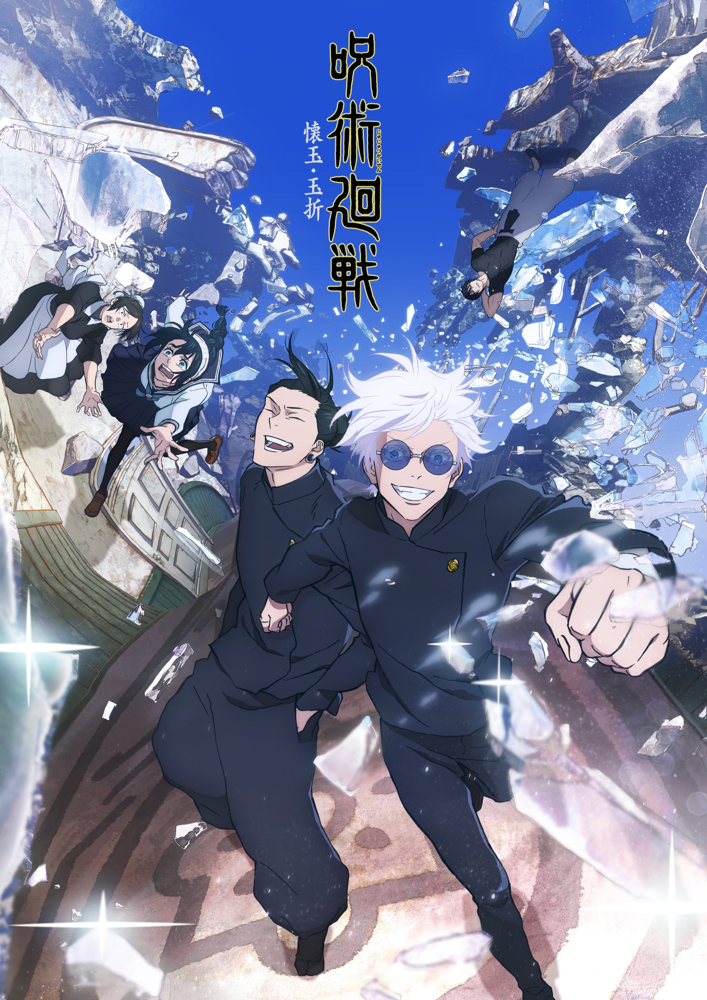

Other projects

Attack on titan
HAJIME ISAYAMA

Jujutsu Kaisen
GEGE AKUTAMI
Chainsaw-man
TATSUKI FUJIMOTO
Attack on Titan" is a riveting and intense anime series that has captivated audiences worldwide. Set in a world where humanity resides within enormous walled cities to protect themselves from giant humanoid creatures known as Titans, the series unfolds with a sense of mystery and suspense. The story follows Eren Yeager, Mikasa Ackerman, and Armin Arlert, who witness the destruction of their hometown when a colossal Titan breaches the outer wall. Fueled by a desire for revenge and the discovery of his own mysterious abilities, Eren joins the military to fight against the Titans and uncover the truth behind their existence. As the narrative unfolds, "Attack on Titan" explores complex themes such as survival, sacrifice, and the consequences of war. The characters face moral dilemmas, political intrigue, and shocking revelations, making the series a compelling and thought-provoking experience.
Jujutsu Kaisen" (JJK) is an electrifying anime that seamlessly blends supernatural action, intense battles, and genuine character development. The story revolves around Yuji Itadori, an ordinary high school student drawn into a world of curses, dark magic, and the supernatural. When Yuji's friends inadvertently unseal a cursed object containing malevolent Cursed Spirits, his life takes an unexpected turn. After a fateful encounter with the enigmatic Satoru Gojo, a Jujutsu Sorcerer, Yuji finds himself thrust into the dangerous and thrilling world of Jujutsu Sorcery. The mission: to collect powerful and malicious Cursed objects, and confront and eliminate Cursed Spirits.
Chainsaw Man" is a captivating and exhilarating manga series that blends horror, action, and dark humor to create a unique and unforgettable experience. The story follows Denji, a young man burdened with debt and struggling for survival in a world plagued by monstrous creatures known as Devils. To make ends meet, Denji works as a devil hunter alongside his pet devil, Pochita, who can transform into chainsaw blades. As Denji gets entangled with the devil hunting organization, he faces gruesome battles against terrifying devils, leading to unexpected twists and turns. The series takes unexpected and often darker turns, exploring themes of identity, purpose, and the consequences of one's choices.